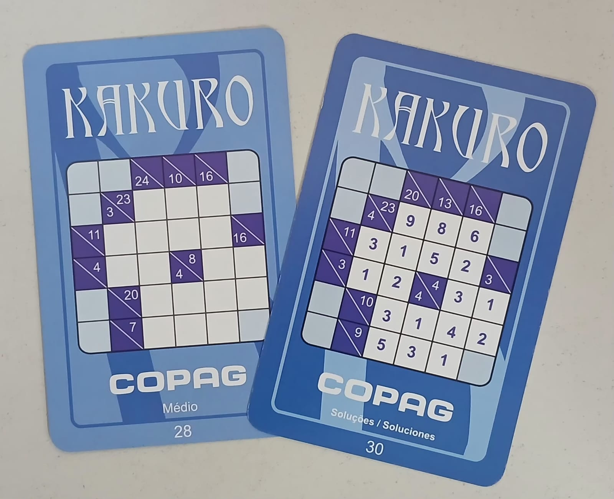

Baralho de Kakuro
Quebra-cabeça numérico de somas cruzadas
Preencha as casas brancas com números de 1 a 9, usando as pistas de soma para completar cada sequência sem repetir dígitos dentro dela.

O desafio
O que observar neste jogo
O Kakuro combina lógica e aritmética. As casas roxas trazem pistas numéricas para sequências de casas brancas: uma pista indica a soma dos números que devem preencher a sequência horizontal ou vertical correspondente.
Como no Sudoku, não basta encontrar números que somem o valor pedido: os algarismos de uma mesma sequência não podem se repetir. A carta fotografada indica dificuldade média e aparece acompanhada de uma carta com a solução.
Guia de ação
Como experimentar
- 1
Escolha um desafio
Observe a grade e identifique as pistas diagonais. Em geral, o número na parte superior indica a soma de uma sequência horizontal e o da parte inferior indica a soma de uma sequência vertical.
- 2
Conte as casas
Para cada pista, determine quantas casas brancas compõem a sequência. A quantidade de casas e a soma limitam quais combinações de algarismos são possíveis.
- 3
Elimine combinações
Use algarismos de 1 a 9 sem repetição dentro de cada sequência. Cruze as possibilidades horizontais e verticais para descobrir quais números podem ocupar cada casa.
- 4
Confira a solução
Quando completar a grade, compare o resultado com a carta de solução correspondente. Se houver divergência, revise primeiro as somas e as repetições nas sequências afetadas.
Possibilidades educativas
O que a atividade pode mobilizar
Raciocínio lógico-matemático
Relacionar somas, quantidade de casas e combinações possíveis de números.
Dedução
Cruzar as restrições horizontais e verticais para reduzir as possibilidades.
Atenção e planejamento
Registrar candidatos, acompanhar várias sequências e revisar hipóteses.
“Pode mobilizar” não significa “desenvolve automaticamente”. A experiência depende da proposta, da repetição, do diálogo e das condições de participação.
Mediação
Perguntas que mantêm o problema aberto
- Quais combinações de números podem produzir essa soma sem repetir algarismos?
- O que muda quando sabemos quantas casas precisam ser preenchidas?
- Que informação da sequência vertical ajuda a decidir esta casa da sequência horizontal?
Participação e acessibilidade
Formas de adaptar sem retirar o desafio
- Permita anotar candidatos em uma folha separada para acompanhar as possibilidades.
- Amplie a imagem ou use uma lupa caso os números das pistas sejam pequenos.
- Em dupla, uma pessoa pode analisar as somas horizontais e a outra as verticais, explicando como as conclusões se relacionam.